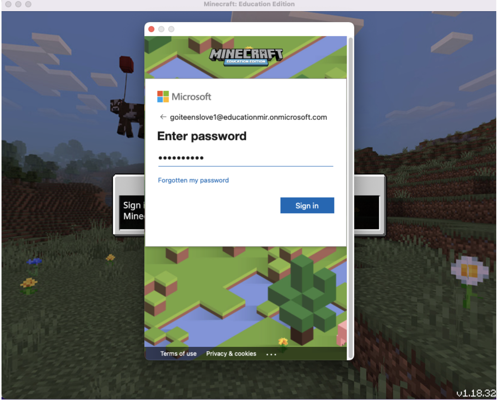

Скачай Minecraft Education:
Download Minecraft EducationВведи свій логін і пароль.
Натисни кнопку “Next”.
Натисни кнопку “Sign in”.
Створи новий світ.
Натисни кнопку “Play”.

Натисни кнопку “Create New” ("Створити") з плюсом.
Натисни кнопку “New” ("Новий").
Налаштуй параметри нового світу.
Заповни поле "World Name" ("Назва світу") зрозумілою назвою.
Обери зі списку "Default Game Mode" ("Стандартний режим гри") режим "Creative" ("Творчий").
Обери зі списку "Difficulty" ("Складність") режим "Peaceful" ("Мирно").
Обери зі списку "World Type" ("Тип світу") режим "Flat" ("Плаский").
Натисни кнопку "Play" ("Грати").
Перейди у редактор коду (Code Builder).
Натисни кнопку "H" ("Show Controls", "Показати елементи керування") (це кнопка з українською літерою "Р") на клавіатурі.
Натисни кнопку "C" ("Code Builder") (це кнопка з українською літерою "C") на клавіатурі.
Обери режим «Microsoft MakeCode», який дає змогу програмувати у Minecraft за допомогою блоків, Python або JavaScript.
Додай новий проєкт.
Натисни кнопку "New Project" ("Новий проєкт").
Дай назву проєкту у полі "Give your project a name." ("Назвіть свій проєкт.") та натисни кнопку "Create" ("Створити").